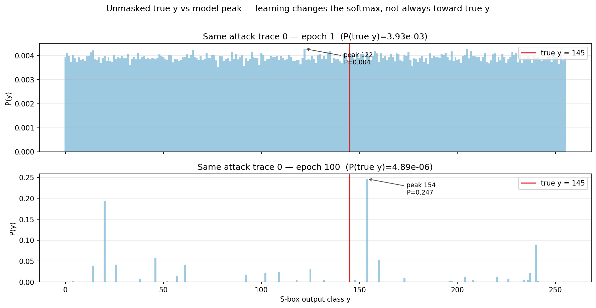
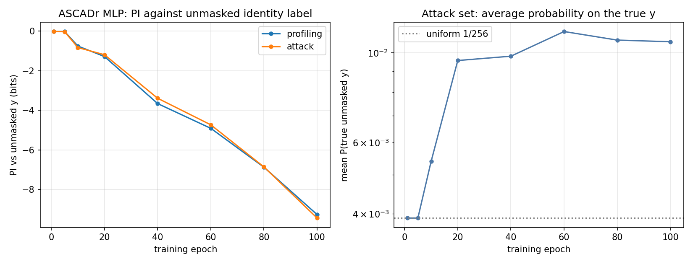

What changes during learning
Q: From epoch 1 to epoch 100, what is the ASCADr MLP learning in its outputs — and why can PI against the unmasked label fall while something real is still being learned?
Claim
Each checkpoint is a different network. Learning means the map
power trace → softmax over y ∈ {0,…,255}
changes across epochs. On masked ASCADr that change is easy to misread if you
only watch PI against the unmasked label y = Sbox[p ⊕ k].
Example 1 — the same attack trace, epoch 1 vs epoch 100
Attack trace 0; true unmasked label y = 145 (red line).

| Epoch 1 | Epoch 100 | |
|---|---|---|
| Shape of softmax | almost flat (~1/256) | sharp peaks |
| Peak class | 122 (P ≈ 0.004) | 154 (P ≈ 0.25) |
| P(true y = 145) | 3.9×10⁻³ | 4.9×10⁻⁶ |
What this shows: training did not leave the outputs alone. The model
became confident — but on this trace the confidence landed on the wrong
unmasked class, and the true unmasked y got less probability than at
epoch 1.
That is the concrete picture behind “PI can fall”: for some traces, mass moves away from the unmasked truth.
Example 2 — averages over the whole attack set

Selected epochs (attack set):
| Epoch | PI vs unmasked y (bits) | Mean P(true unmasked y) |
|---|---|---|
| 1 | −0.02 | 0.00390 (= 1/256) |
| 5 | −0.02 | 0.00390 |
| 10 | −0.83 | 0.00540 |
| 20 | −1.19 | 0.00957 |
| 40 | −3.39 | 0.00981 |
| 60 | −4.73 | 0.01129 |
| 80 | −6.86 | 0.01076 |
| 100 | −9.44 | 0.01065 |
Two facts at once:
- PI falls (left panel) — the log-score against unmasked
ygets worse on average (logs punish traces where P(true y) is tiny, as in Example 1). - Mean P(true y) rises above chance (right panel) — from 1/256 ≈ 0.0039 to about 0.011 (~2.7× uniform). A weak average preference for the true unmasked class does appear; it is just not a sharp, reliable peak on every trace.
So “PI ↓” is not the same sentence as “the model never prefers the true y.” It is “when we score with log-probability against unmasked y, the score worsens,” while a mild average lift above uniform can still exist.
Collected facts
| Evidence | Says | Hypothesis (not proven here) |
|---|---|---|
| Softmax epoch 1 → 100 on one trace | Outputs change from flat to peaky | Training acquires some structure in the outputs |
| Peak ≠ true unmasked y on that trace | Learning ≠ “always name unmasked y” | Peaks may track a masked intermediate, not plain y |
| Mean P(true y) > 1/256 late in training | A weak average signal toward unmasked y exists | Enough bias remains for multi-trace ranking to work |
| PI goes from ~0 to about −9 bits | On average, log P(true unmasked y) gets worse |
We may be scoring the wrong target (unmasked y) for what the net learned |
Not measured here: which intermediate the peaks actually track, or in which layer. That is Act III.
← Previous: How many traces · Index · Next: Chapter 8 — Perceived Information →